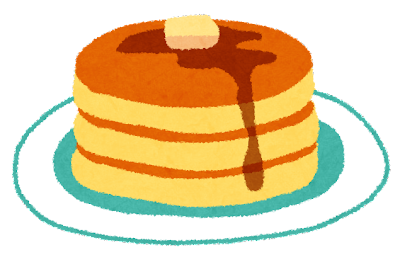

Ricetta pancake
Ingredienti
- 250 ml di latte
- 200 g di farina
- 1 uovo
- 100 g di zucchero
- 65 g di lievito
Procedimento
- Mettete in una ciotola l'uovo intero
- Aggiungete il latte a temperatura ambiente e continuate a sbattere solo con la forchetta o con una frusta a mano l'impasto per i pancake senza burro.
- Aggiungete a poco a poco tutta la farina setacciata e il lievito in polvere per dolci e continuate a mescolare con una frusta a mano in modo che non si formino grumi fino a che otterrete una pastella liscia e omogenea.
Varianti
Non serve mettere burro nella padella,
in questo modo saranno davvero pancake senza burro.
Non schiacciate i pancake velocemente dopo averli girati, ma lasciateli belli gonfi.
La mia ricetta per pancake non prevede burro, quindi non usatelo. Non serve.
Ricetta presa da Giallo Zafferano